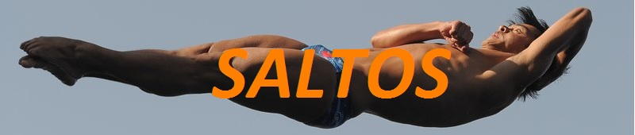
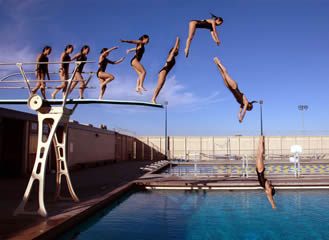

|  |
| El salto o clavado (conocidos en plural como saltos ornamentales) es una forma de deporte o entretenimiento, que consiste en lanzarse al agua de una piscina, lago, río o del mar desde algún punto fijo o vibrátil. El punto fijo puede ser la orilla del cuerpo de agua, una roca, montículo, peña, acantilado o incluso un puente muy cercanos al agua o sobre ella, en el caso de sitios naturales o no adaptados para deporte, y una plataforma o la orilla de la piscina en caso de sitios sí adaptados para ello. El punto vibrátil puede ser un trampolín en el caso de sitio adaptados, incluso se puede dejar caer desde una cuerda tendida entre las orillas del cuerpo de agua. Momentos efímeros pero de gran belleza que exigen, como la gimnasia, altos grados de precisión, solo se consiguen con una férrea disciplina, muchas horas de entrenamiento y el arrojo necesario para lanzarse a un vacío de 10 metros. |
| Índice: |
| Las competiciones de saltos se remontan a la antigua Grecia. Se realizaban lanzándose al mar desde las costas del Peloponeso y de las islas Eólicas. Los cretenses también nos dejaron vestigios de que se realizaban competiciones de saltos en el mar. Existen imágenes que nos muestran de qué manera se realizaban algunos saltos en la antigüedad. Los Juegos Olímpicos acogieron por primera vez a los saltos de trampolín como disciplina en 1904. Fue en San Luis y solo participaron varones y con dos tipos de saltos: normales y variedad. Las damas tuvieron que esperar hasta los Juegos Olímpicos de Estocolmo en 1912. Los saltos de trampolín se empezaron a desarrollar como resultado del avance de la gimnasia en la Europa del siglo XIX. En la copa del Mundo de 1995 debutaron oficialmente los saltos sincronizados y en Sydney 2000 se estrenaron como disciplina olímpica. La Federación Internacional de Natación es la encargada de regular las normas de las competiciones de saltos, así como de celebrar periódicamente competiciones y eventos. |
 |
Los saltos se dividen en 6 grupos:
Los jueces al calificar el salto toman en cuenta 6 aspectos:
|
| Si desea volver a la página principal haz clic aquí |